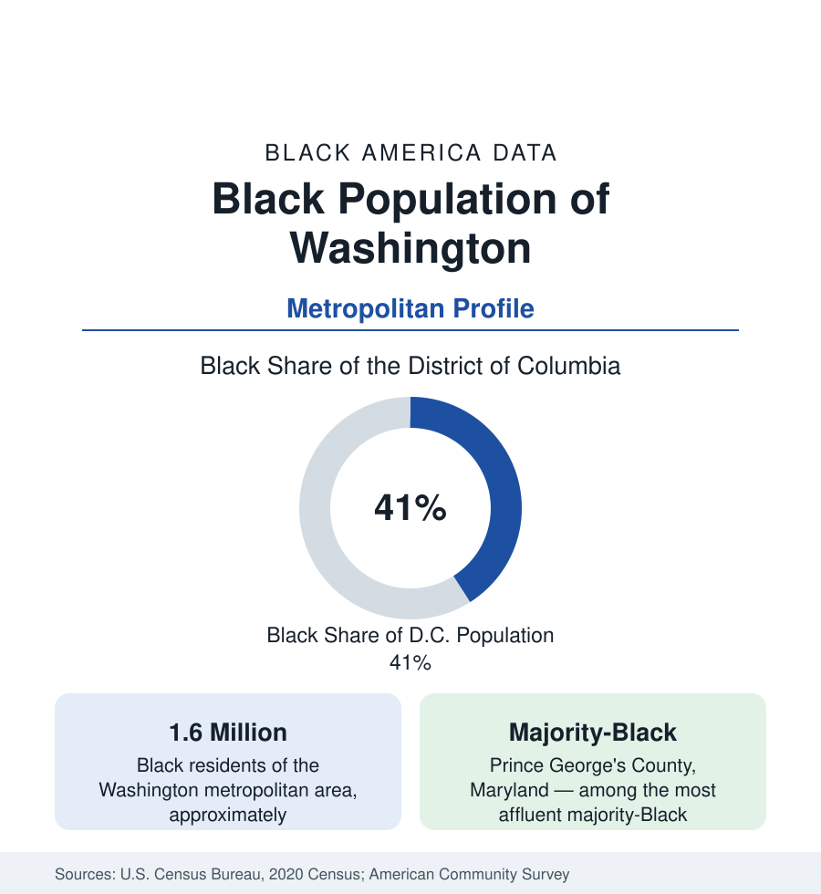

Black Cities
Black Washington: The District and the Metro
The Washington metro holds about 1.6 million Black residents, and the District itself — long a majority-Black city — now records a Black share near 41 percent. The census profile.

Washington is the historic capital of Black political America, and its demography is unique among the profiles in this section. The metropolitan area holds about 1.6 million Black residents — roughly one in four — while the District of Columbia itself, which was the first large American city to become majority Black, in the 1950s, now records a Black share of about 41 percent: still the highest of any major American city jurisdiction, but no longer a majority. Around the District, in Maryland's Prince George's County, sits one of the most affluent majority-Black counties in the United States. This article profiles the region's Black population in the census data.
The District: From Majority to Plurality
The District's Black share peaked at about 71 percent in 1970, the product of a century and a half of Black Washington — a free Black community predating the Civil War, a Reconstruction-era influx, Great Migration arrivals, and the mid-twentieth-century departure of White residents to the suburbs. From the 1990s onward, the direction reversed: the city's population grew for the first time in decades on an influx of younger, affluent, disproportionately White newcomers, while Black Washingtonians moved to the suburbs in large numbers — many priced out of neighborhoods their families had inhabited for generations. The census records the result as a share declining census by census — from 60 percent at the century's turn to 50 percent, then to the 41 percent of the most recent count — while the metro-wide Black population continued to grow. National commentary named the era the end of 'Chocolate City'; the data behind the phrase are these.
The Suburban Center: Prince George's County
The demographic counterpart of the District's decline is Prince George's County, Maryland, directly east of the city: a county of nearly a million people that is roughly two-thirds Black and records median household incomes for Black households among the highest of any large county in the nation. Prince George's is the fullest expression in the data of the pattern the census section calls Black suburbanization — a majority-Black jurisdiction that is neither a city core nor a poverty geography but an affluent suburban county of homeowners, federal professionals, and entrepreneurs. Charles County, Maryland, further south, has followed the same path to a Black plurality with high incomes. Together with the District and the Black populations of Montgomery County and Northern Virginia, they make the Washington region the strongest large-metro case of Black suburban affluence in the federal data.
The Federal Engine
The composition of Black Washington is shaped by its economic engine: the federal government and the institutions around it. Federal employment — historically opened to Black professionals earlier and more broadly than most private employers — built a large Black professional and managerial class in the region, and Black Washingtonians record educational attainment and household incomes well above national Black averages. Howard University, founded in 1867, anchors the region's Black institutional life as the nation's most comprehensive historically Black university. The result in the survey data is a Black population whose professional share resembles the profile the business section documents for the region's contractors, associations, and federal workforce.
Reading the Washington Numbers
East of the River
Inside the District, the census maps a divide along the Anacostia River. Wards 7 and 8, east of the river, remain overwhelmingly Black — above 90 percent in many tracts — and record the city's lowest incomes and its most difficult health indicators, while the wards west of Rock Creek Park have become majority White and affluent. The river line is among the sharpest internal demographic boundaries of any American city, and tract-level profiles in this section document it in full.
Washington's data punish careless reading in a specific way: the city and the region tell opposite stories. Quoting the District alone yields decline — falling share, displacement, a lost majority. Quoting the metro yields continuity and growth — 1.6 million Black residents, rising suburban affluence, the strongest Black professional base of any region its size. Both are true, and the truth of the profile is in holding them together: a population that did not leave Washington so much as redistribute across it, along lines of income and housing cost that the census maps precisely. The profiles that follow — Chicago, Houston, and the rest — apply the same discipline of separating the city figure from the regional one.
More in Black Cities
Black Atlanta: Population, Distribution, and Growth of a Black Metropolis
Metro Atlanta holds more than two million Black residents — roughly one in three, second only to New York. The suburban distribution, migration history, and composition of Black Atlanta in the census data.
Black New York: The Largest Black Population in America
The New York metropolitan area holds about 3.4 million Black residents — more than any metro in the nation — and the city itself about two million. The census profile.
Black Chicago: Population of the City and the Metro
The Chicago metro holds about 1.6 million Black residents; the city itself counted 787,551 in the last census, just under 29 percent. The profile of Black Chicago.
Source: U.S. Census Bureau, 2020 Census; American Community Survey; Population Estimates Program.